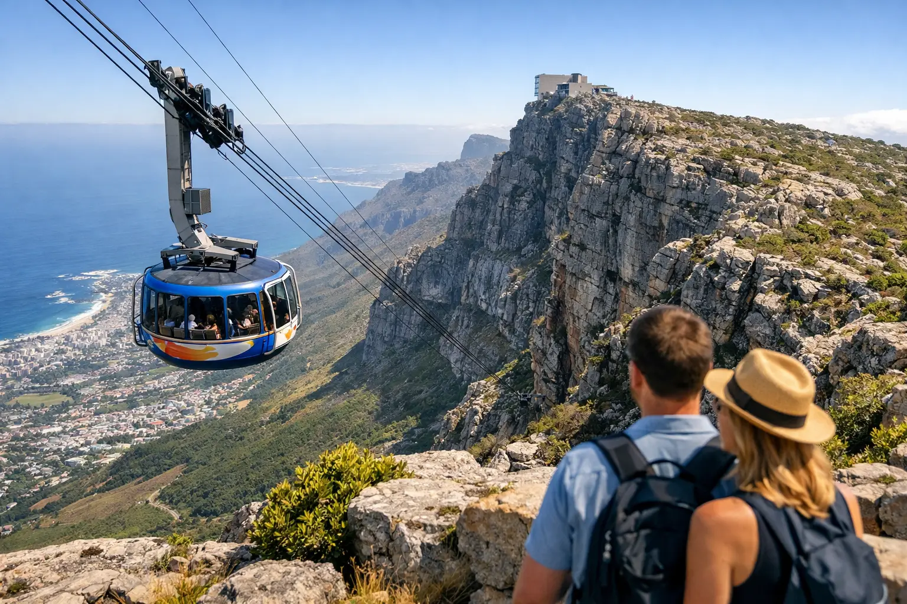

How to Plan a Table Mountain Cableway Visit

Cape Town’s skyline changes the moment you look up at its flat-topped landmark. The Table Mountain cableway is the fastest route from the city’s energy to wide-open views across the Atlantic, the Twelve Apostles, Robben Island, and the Cape Peninsula. It is also an attraction shaped by one factor no itinerary can control: mountain weather.
For travelers with limited time, the cableway can be the highlight that makes a city day feel complete. The key is planning it with enough flexibility to work around wind, cloud, and peak visitor periods, rather than treating it as a fixed appointment.
Why the Table Mountain Cableway Is Worth Planning Around
The ride from the lower station to the summit takes only a few minutes, but the experience is much bigger than the journey. The cable car’s rotating floor gives every passenger changing views as it rises above Cape Town. Within minutes, city streets and beachfront neighborhoods sit far below, while the mountain’s sandstone cliffs fill the view beside you.
At the top, you are not stepping onto a single viewing deck. The summit has marked pathways, lookouts in several directions, a café, restrooms, and enough space to spend anything from 45 minutes to several hours. On a clear day, this is one of the best places to understand Cape Town’s geography: the city bowl on one side, Camps Bay and the Atlantic on another, and the long spine of the peninsula leading south toward Cape Point.
It is an easy choice for couples, families, first-time visitors, and groups who want dramatic scenery without committing to a full-day hike. That said, it is not always the best choice for every day of a trip. If the top is hidden by thick cloud, a coastal drive, Cape Winelands experience, or Cape Peninsula tour may offer a better use of the day while you wait for clearer conditions.
Table Mountain Cableway Weather and Operating Conditions
The cableway operates according to conditions on the mountain, not simply the weather forecast in the city. Cape Town can be sunny at sea level while the summit is cold, cloudy, or too windy for safe operation. Strong winds are the most common cause of temporary closures, especially in the warmer, windier months.
Check operating status on the morning of your visit and again before traveling to the lower station. A closure can happen with little notice, and reopening times depend on the weather clearing and safety checks being completed. Building a backup activity into your plans removes much of the frustration. The V&A Waterfront, Bo-Kaap, Kirstenbosch National Botanical Garden, and the Constantia wine area are all practical alternatives depending on your interests and where you are staying.
Cloud is not automatically a reason to skip the mountain. The famous “tablecloth” cloud rolling over the summit can be striking from below, but it may limit the views once you are at the top. If panoramic photographs are your priority, wait for a clearer window. If you enjoy cool mountain air, unusual scenery, and short walks, a partly cloudy visit can still be rewarding.
What to Wear at the Summit
Bring a light jacket even when Cape Town feels warm. Temperatures are often cooler at the top, and wind can make a mild day feel chilly. Comfortable closed shoes are sensible for the uneven stone paths, particularly if you plan to walk beyond the main viewpoints.
Sunscreen, sunglasses, water, and a charged phone are useful year-round. The high exposure on the mountain catches many visitors off guard. In winter, add a warmer layer and rain protection. Weather can change quickly, so avoid relying on a beach-day outfit for the summit.
Tickets, Timing, and How Long to Allow
Buying tickets ahead of time can reduce one part of the process, but it does not guarantee the weather. Advance ticket holders may still need to queue, and cableway operations can be paused or closed if conditions become unsafe. Ticket options and schedules can change by season, so confirm the current arrangements before your visit.
Early morning is often a smart choice. The light is beautiful, temperatures are usually more comfortable, and you may avoid the heaviest midday crowds. Late afternoon can also be excellent for softer light and sunset views, although this option needs more care. Allow enough time to descend before the final trips down, and remember that weather changes can affect operations later in the day.
For most visitors, plan on two to three hours from arriving at the lower station to returning. This allows time for possible lines, the ride itself, a relaxed walk at the summit, photographs, and a drink or snack. During school holidays, summer, or when several tour groups arrive at once, allow longer.
A traveler who wants only the signature views may be happy with an hour at the top. Photographers, hikers, and visitors who want to explore the plateau at a slower pace should reserve half a day. There is no prize for rushing through one of the city’s defining landscapes.
Getting to the Lower Cableway Station
The lower station sits on Tafelberg Road, above the city center and near the slopes of Table Mountain. It is reachable by taxi, rideshare, rental car, or organized transport. Parking can be limited during busy periods, and the road becomes congested when the weather is clear and visitor demand is high.
For overseas visitors, private or guided transport removes the need to navigate mountain roads, find parking, or manage a return trip if the cableway closes after you arrive. A driver can wait nearby or adapt the day’s order when conditions call for a change. This is especially helpful for families with young children, travelers carrying camera equipment, and groups coordinating several pickup points.
Flexi Tours can incorporate the cableway into a private Cape Town day with hotel pickup, a city route, and flexible timing around the operating conditions. It works particularly well alongside Bo-Kaap, the Company’s Garden, Signal Hill, Camps Bay, or a drive along the Atlantic Seaboard. The exact sequence should depend on the day’s forecast, traffic, and your preferred pace.
What to Do Once You Reach the Top
Start by taking a few minutes near the upper station to orient yourself. Views over the city bowl and harbor are close by, while other paths lead toward the Atlantic-facing side of the mountain. Signage helps visitors stay on the designated routes, which is essential for both personal safety and protection of the mountain’s sensitive vegetation.
The easy pathways are suitable for many visitors, but the surface is not perfectly smooth. Those with mobility concerns should check current access arrangements before visiting, as comfort levels vary by route and conditions. The cable car itself is designed to accommodate a range of visitors, yet the summit terrain remains a natural mountain environment rather than an indoor attraction.
Keep an eye out for dassies, also known as rock hyraxes. These small, furry animals are regularly seen around the upper station and rocks. They are appealing to photograph, but they are wild animals. Give them space, do not feed them, and keep food secure.
Walk, Photograph, or Combine It With a Hike
The cableway is a good fit for a simple sightseeing visit, but it can also be part of a more active day. Some travelers hike up one of Table Mountain’s established routes and take the cable car down. Others take the cableway up, follow the easier summit walks, and return by cable car.
Hiking one way changes the preparation required. Routes such as Platteklip Gorge are steep, exposed, and more demanding than they appear from the city. They require adequate fitness, water, weather awareness, and a clear plan for timing. Never assume the cableway will be operating when you reach the top, and do not begin a hike late in the day without appropriate experience and equipment.
For travelers who prefer the views without a strenuous climb, the cableway offers the better balance of access, comfort, and time. You can still enjoy the feeling of being on the mountain rather than merely looking at it from below.
Make Space for a Flexible Cape Town Day
The best Table Mountain visits are rarely over-scheduled. Keep the morning or afternoon open enough to respond to conditions, arrive prepared for cooler weather, and allow time to enjoy the summit rather than just checking it off an itinerary. When the clouds lift and the cableway is running, Cape Town’s most recognizable viewpoint is ready to reward the wait.
Planning this trip?
Tell us your dates and we will put a day together for you.